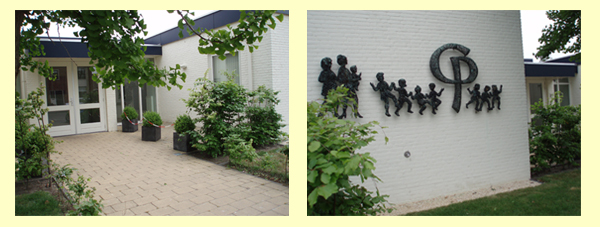

De praktijk is gevestigd in het Gezondheidscentrum aan de Acacialaan.
Adresgegevens:
C.M van der Ploeg
Kinderfysiotherapeute
Acacialaan 2F
2641AC Pijnacker
Telefoon: 015-3613626
Voor een routebeschrijving en kaart, klik hier.
Opening van de praktijk:
De praktijk is telefonisch bereikbaar van maandagochtend 8.00 uur t/m vrijdag 17.00 uur.
Indien ik u niet te woord kan staan dan kunt u het antwoordapparaat inspreken, u wordt dezelfde dag nog teruggebeld.
Behandelingen op afspraak zijn mogelijk op:
Dinsdag van 8.45 uur tot 18.30 uur
Woensdag van 8.45 uur tot 18.30 uur
Donderdag van 8.45 uur tot 21.00 uur |